공식 아이템 목록을 기준으로 정리했습니다. 총 56개. 팬 사이트 안내이며 게임과 다를 수 있습니다. 출처: 리니지 클래식 아이템
| 아이템 | 효과 | 재질 | 무게 | 클래스 | 착용레벨 | 안전인첸 |
|---|---|---|---|---|---|---|
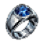 마나의 반지 | MP회복 +1 | 금 | 3 | 전체 | 0 | 0강 |
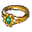 멸마의 반지 | MR +10 | 금 | 3 | 전체 | 0 | 0강 |
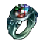 민첩의 반지 | DEX +1 | 금 | 3 | 전체 | 0 | 0강 |
| 변신 조종 반지 | 랜덤 변신 방지 | 금 | 3 | 전체 | 0 | 0강 |
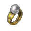 소환 조종 반지 | 소환 몬스터 지정 | 금 | 3 | 마법사 | 0 | 0강 |
| 수령의 반지 | 물 속성 저항력 증가 +10 | 금 | 3 | 전체 | 0 | 0강 |
| 수호의 반지 | — | 금 | 3 | 전체 | 0 | 0강 |
| 수호자의 반지 | 최대 HP +30, 최대 MP +20 | 금 | 3 | 군주 | 45 | 0강 |
| 순간이동 조종 반지 | 기억 장소 텔레포트 | 금 | 3 | 전체 | 0 | 0강 |
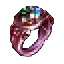 완력의 반지 | STR +1 | 금 | 3 | 전체 | 0 | 0강 |
| 장로의 반지 | MP회복 +1, 최대 MP +10 | 나무 | 3 | 전체 | 0 | 0강 |
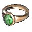 제니스의 반지 | 독 이뮨 효과 | 금 | 3 | 전체 | 0 | 0강 |
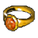 지령의 반지 | 땅 속성 저항력 증가 +10 | 금 | 3 | 전체 | 0 | 0강 |
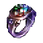 지식의 반지 | INT +1 | 금 | 3 | 전체 | 0 | 0강 |
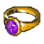 풍령의 반지 | 바람 속성 저항력 증가 +10 | 금 | 3 | 전체 | 0 | 0강 |
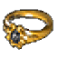 항마의 반지 | MR +5 | 금 | 3 | 전체 | 0 | 0강 |
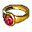 화령의 반지 | 불 속성 저항력 증가 +10 | 금 | 3 | 전체 | 0 | 0강 |
| 아이템 | 효과 | 재질 | 무게 | 클래스 | 착용레벨 | 안전인첸 |
|---|---|---|---|---|---|---|
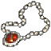 낡은 매력의 목걸이 | CHA +1, INT -2 | 보석 | 5 | 전체 | 0 | 0강 |
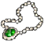 낡은 민첩의 목걸이 | CON -2, DEX +1 | 보석 | 5 | 전체 | 0 | 0강 |
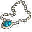 낡은 완력의 목걸이 | DEX -2, STR +1 | 보석 | 5 | 전체 | 0 | 0강 |
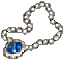 낡은 지식의 목걸이 | INT +1, WIS -2 | 보석 | 5 | 전체 | 0 | 0강 |
| 낡은 지혜의 목걸이 | CHA -2, WIS +1 | 보석 | 5 | 전체 | 0 | 0강 |
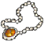 낡은 체력의 목걸이 | CON +1, STR -2 | 보석 | 5 | 전체 | 0 | 0강 |
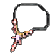 매력의 목걸이 | CHA +1 | 보석 | 5 | 전체 | 0 | 0강 |
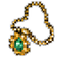 멸마의 목걸이 | MR +8 | 금 | 3 | 전체 | 0 | 0강 |
| 민첩의 목걸이 | DEX +1 | 보석 | 5 | 전체 | 0 | 0강 |
| 수호의 목걸이 | — | 금 | 3 | 전체 | 0 | 0강 |
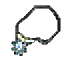 오크 투사의 목걸이 | 최대 HP +20 | 보석 | 5 | 전체 | 10 | 0강 |
| 완력의 목걸이 | STR +1 | 보석 | 5 | 전체 | 0 | 0강 |
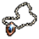 장로의 목걸이 | MP회복 +1, 최대 MP +30 | 나무 | 3 | 전체 | 0 | 0강 |
| 지식의 목걸이 | INT +1 | 보석 | 5 | 전체 | 0 | 0강 |
| 지혜의 목걸이 | WIS +1 | 보석 | 5 | 전체 | 0 | 0강 |
| 체력의 목걸이 | CON +1 | 보석 | 5 | 전체 | 0 | 0강 |
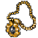 항마의 목걸이 | MR +5 | 금 | 3 | 전체 | 0 | 0강 |
| 해골 목걸이 | — | 뼈 | 1 | 전체 | 0 | 0강 |
| 아이템 | 효과 | 재질 | 무게 | 클래스 | 착용레벨 | 안전인첸 |
|---|---|---|---|---|---|---|
| 낡은 신체의 벨트 | 최대 HP +30 | 가죽 | 50 | 전체 | 15 | 0강 |
| 낡은 영혼의 벨트 | 최대 HP +15, 최대 MP +15 | 가죽 | 50 | 전체 | 15 | 0강 |
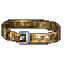 낡은 정신의 벨트 | 최대 MP +30 | 가죽 | 50 | 전체 | 15 | 0강 |
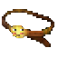 땅 정령의 벨트 | 땅 속성 저항력 증가 +10, 무게추가 +500 | 가죽 | 50 | 전체 | 0 | 0강 |
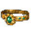 멸마의 벨트 | 무게추가 +500 | 금 | 3 | 전체 | 0 | 0강 |
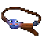 물 정령의 벨트 | 무게추가 +500, 물 속성 저항력 증가 +10 | 가죽 | 50 | 전체 | 0 | 0강 |
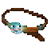 바람 정령의 벨트 | 무게추가 +500, 바람 속성 저항력 증가 +10 | 가죽 | 50 | 전체 | 0 | 0강 |
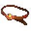 불 정령의 벨트 | 무게추가 +500, 불 속성 저항력 증가 +10 | 가죽 | 50 | 전체 | 0 | 0강 |
| 빛나는 신체의 벨트 | HP회복 +1, 최대 HP +50 | 가죽 | 50 | 전체 | 30 | 0강 |
| 빛나는 영혼의 벨트 | HP회복 +1, MP회복 +1, 최대 HP +20, 최대 MP +20 | 가죽 | 50 | 전체 | 30 | 0강 |
| 빛나는 정신의 벨트 | MP회복 +1, 최대 MP +50 | 가죽 | 50 | 전체 | 30 | 0강 |
| 수호의 벨트 | 무게추가 +400 | 금 | 50 | 전체 | 0 | 0강 |
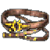 신체의 벨트 | 최대 HP +50 | 가죽 | 50 | 전체 | 30 | 0강 |
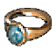 에이션트 자이언트의 반지 | STR +1 | 금 | 50 | 전체 | 0 | 0강 |
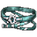 영혼의 벨트 | 최대 HP +25, 최대 MP +25 | 가죽 | 50 | 전체 | 30 | 0강 |
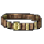 오우거의 벨트 | 무게추가 +1000 | 가죽 | 50 | 전체 | 0 | 0강 |
| 용기의 벨트 | 최대 HP +30 | 가죽 | 50 | 기사 | 45 | 0강 |
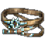 정신의 벨트 | 최대 MP +50 | 가죽 | 50 | 전체 | 30 | 0강 |
| 타이탄의 벨트 | 무게추가 +1500 | 가죽 | 50 | 전체 | 0 | 0강 |
| 트롤의 벨트 | 무게추가 +500 | 가죽 | 50 | 군주 · 기사 · 요정 | 0 | 0강 |
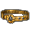 항마의 벨트 | 무게추가 +400 | 금 | 50 | 전체 | 0 | 0강 |